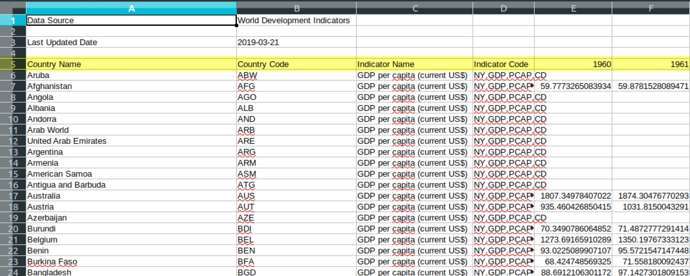
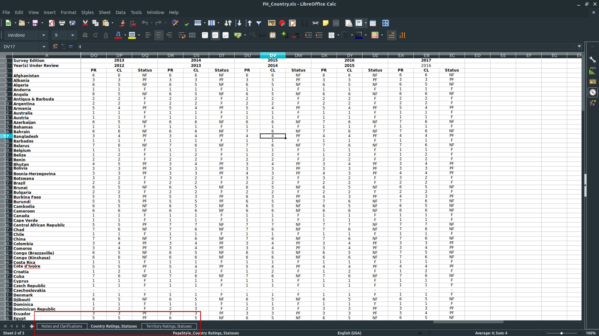
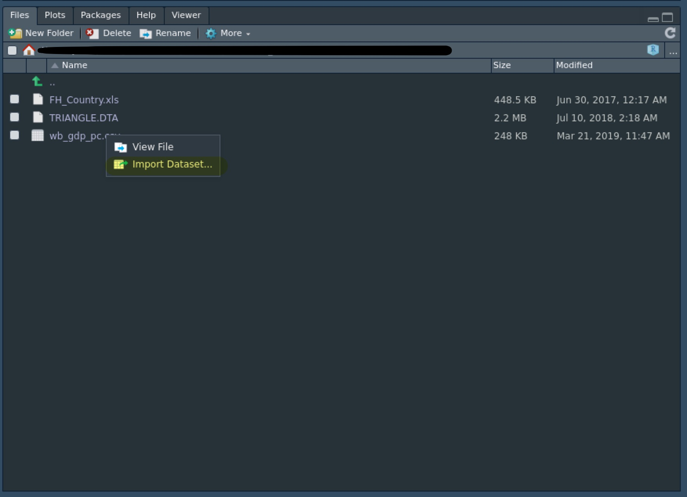
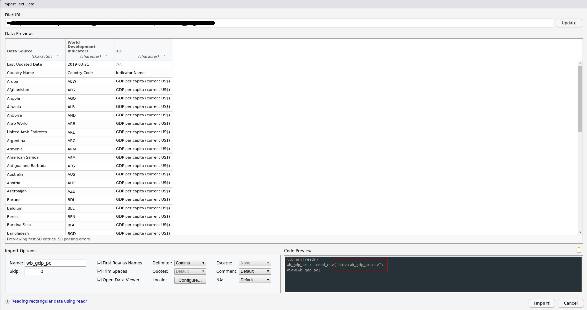

Rでデータを読み込む方法について説明します。
統計分析をする際にはデータを読み込む（インポート）必要があります。 基本的にPCに保存されたデータのパスを入力することでデータを読み込みます。
ここでは統計分析でよく使われるデータ形式を紹介した後に、Rによる読み込み方を説明します。 なお、tidyverseというパッケージを使用します。
library(tidyverse)
── Attaching packages ───────────────────────────────────────────────────────────────────────────────────────────────────────── tidyverse 1.2.1 ──
✔ ggplot2 3.1.0 ✔ purrr 0.3.2
✔ tibble 2.1.1 ✔ dplyr 0.8.0.1
✔ tidyr 0.8.3 ✔ stringr 1.4.0
✔ readr 1.3.1 ✔ forcats 0.4.0
── Conflicts ──────────────────────────────────────────────────────────────────────────────────────────────────────────── tidyverse_conflicts() ──
✖ dplyr::filter() masks stats::filter()
✖ dplyr::lag() masks stats::lag()基本的にはRでデータを読み込めば中身を見ることができるのですが、後述するようにRで読み込む前に生データを見たい場合はしばしばあります。
そのときにMicrosoft OfficeのExcelを使うのはあまりおすすめしません。 なぜなら、
からです。
特に後者の問題は重要だと思います。 例えば日本語を含むデータの場合、Windowsで作成されたものをLinuxやMacで開くと、あるいはその逆をすると文字化けを起こすからです。
そこで、LibreOfficeという無料のオフィスソフトをダウンロードし、その中のCalcを使用することをおすすめします。 LibreOffice Calcであればファイルを開く際にエンコードを選択できるので文字化けすることはありません。
UTF-8にする。Shift-JISあるいはCP932にする。大雑把に言ってしまうとPCのデータにはテキストデータとバイナリデータに分かれます。 さらにそれぞれ様々な種類の形式がありますが、拡張子によって判断します。
テキストデータとは人間の理解できる文字列のデータのことです。
.txtファイルは素のテキストデータになり、データの構造を含みません。 統計分析をする際には使いませんが、テキスト分析をする場合はしばしば遭遇します。
統計分析で遭遇するテキストデータの大半は.csvファイルです。 これは“comma-separated values”の略で、各変数はカンマで区切られています。 各観察は改行で区切られています。
.tsvファイルはカンマの代わりにタブで変数が区切られているテキストデータになります。
.htmlファイルとはウェブサイトの内容を記述してあるファイルです。 ウェブスクレイピング（PCに自動でオンラインの情報を収集させること）をする際に使います。
バイナリデータとはPCは理解できるけど人間は特定のソフトを使わないと理解できないようなデータになっています。
最も有名なのはExcelで使用される.xlsまたは.xlsxファイルでしょう。
.dtaファイルとはStataと呼ばれる統計分析ソフト専用のデータ形式になります。 Stataは政治学や経済学で人気のツールなのでレプリケーションデータなどはこの形式で配布されていることもあります。
.savファイルはStataよりも前に人気だった統計ソフト用のデータ形式です。
.rdsファイルとはR戦争のデータ形式になります。 あまり見かけることはありません。
.csvファイルを読み込む場合はread_csv()を使います。 ここでは、例として世界銀行の各国の一人あたりGDPデータを読み込んでみます。
今回は適当に作成したプロジェクト・フォルダの中にdataというフォルダを作成し、その中にwb_gdp_pc.csvというデータを保存してください。
データを読み込む際には()の中に読み込みたいデータのパスを入力する必要があります。 したがって、プロジェクト・フォルダから見たデータの相対パスはdata/wb_gdp_pc.csvとなります。
gdp_pc <- read_csv("data/wb_gdp_pc.csv")
Warning: Missing column names filled in: 'X3' [3]
Parsed with column specification:
cols(
`Data Source` = col_character(),
`World Development Indicators` = col_character(),
X3 = col_character()
)
Warning: 265 parsing failures.
row col expected actual file
2 -- 3 columns 64 columns 'data/wb_gdp_pc.csv'
3 -- 3 columns 64 columns 'data/wb_gdp_pc.csv'
4 -- 3 columns 64 columns 'data/wb_gdp_pc.csv'
5 -- 3 columns 64 columns 'data/wb_gdp_pc.csv'
6 -- 3 columns 64 columns 'data/wb_gdp_pc.csv'
... ... ......... .......... ....................
See problems(...) for more details."で囲むことを忘れないでください。/はいりません。読み込んだデータもオブジェクトなので適当な名前をつけて代入する必要があります。 データの名前は
ようにするのがコツです。
さて、データを無事読み込めるとEnvironmentパネルにgdp_pcが表示されていると思います。
これで一安心と思いきや、Warningという不吉な文字列が見えます。 Environmentパネルをよく見ると変数の数が3つしかないということがわかります。 そこで、データを見てみると、なにかおかしいことが起こっているようです。
head(gdp_pc)
# A tibble: 6 x 3
`Data Source` `World Development Indicators` X3
<chr> <chr> <chr>
1 Last Updated Date 2019-03-21 <NA>
2 Country Name Country Code Indicator Name
3 Aruba ABW GDP per capita (current US$)
4 Afghanistan AFG GDP per capita (current US$)
5 Angola AGO GDP per capita (current US$)
6 Albania ALB GDP per capita (current US$)このような場合はLibreOffice Calcで元データを見てみましょう。

実はread_csv()ではデフォルトでは第1行目を変数名として読み込む設定になっています。 なので、元データのData SourceとWorld Development Indicatorsを変数名として認識してしまったようです。
変数名は第5行目なので、単純な方法は第1行目から第4行目を削除してしまうことですが、そうすべきではない理由がいくつかあります。
ということで、第5行目からデータとして読み込めないか確かめるためにヘルプを見ます。
?read_csvすると、このような記述が見つかります。
skip Number of lines to skip before reading data.ということで、オプションとしてskip = 4を設定して読み込むとうまく行きました。
gdp_pc <- read_csv("data/wb_gdp_pc.csv", skip = 4)
Warning: Missing column names filled in: 'X64' [64]
Parsed with column specification:
cols(
.default = col_double(),
`Country Name` = col_character(),
`Country Code` = col_character(),
`Indicator Name` = col_character(),
`Indicator Code` = col_character(),
`2018` = col_logical(),
X64 = col_logical()
)
See spec(...) for full column specifications.
head(gdp_pc)
# A tibble: 6 x 64
`Country Name` `Country Code` `Indicator Name` `Indicator Code` `1960` `1961` `1962` `1963` `1964`
<chr> <chr> <chr> <chr> <dbl> <dbl> <dbl> <dbl> <dbl>
1 Aruba ABW GDP per capita … NY.GDP.PCAP.CD NA NA NA NA NA
2 Afghanistan AFG GDP per capita … NY.GDP.PCAP.CD 59.8 59.9 58.5 78.8 82.2
3 Angola AGO GDP per capita … NY.GDP.PCAP.CD NA NA NA NA NA
4 Albania ALB GDP per capita … NY.GDP.PCAP.CD NA NA NA NA NA
5 Andorra AND GDP per capita … NY.GDP.PCAP.CD NA NA NA NA NA
6 Arab World ARB GDP per capita … NY.GDP.PCAP.CD NA NA NA NA NA
# … with 55 more variables: `1965` <dbl>, `1966` <dbl>, `1967` <dbl>, `1968` <dbl>, `1969` <dbl>,
# `1970` <dbl>, `1971` <dbl>, `1972` <dbl>, `1973` <dbl>, `1974` <dbl>, `1975` <dbl>,
# `1976` <dbl>, `1977` <dbl>, `1978` <dbl>, `1979` <dbl>, `1980` <dbl>, `1981` <dbl>,
# `1982` <dbl>, `1983` <dbl>, `1984` <dbl>, `1985` <dbl>, `1986` <dbl>, `1987` <dbl>,
# `1988` <dbl>, `1989` <dbl>, `1990` <dbl>, `1991` <dbl>, `1992` <dbl>, `1993` <dbl>,
# `1994` <dbl>, `1995` <dbl>, `1996` <dbl>, `1997` <dbl>, `1998` <dbl>, `1999` <dbl>,
# `2000` <dbl>, `2001` <dbl>, `2002` <dbl>, `2003` <dbl>, `2004` <dbl>, `2005` <dbl>,
# `2006` <dbl>, `2007` <dbl>, `2008` <dbl>, `2009` <dbl>, `2010` <dbl>, `2011` <dbl>,
# `2012` <dbl>, `2013` <dbl>, `2014` <dbl>, `2015` <dbl>, `2016` <dbl>, `2017` <dbl>,
# `2018` <lgl>, X64 <lgl>なお、実はこのように時間（この場合は年）が横方向に進んでいくデータをワイド形式と呼び、大抵の場合はこのままでは分析できないのでロング形式にする必要があります。
実はtidyverseはいくつかのパッケージをまとめたものになっています。 これまでテキストデータの読み込みに使っていたのは、その中のreadrというパッケージになります。
バイナリデータを読み込むには別途パッケージを使う必要があり、.xls[x]ファイルの場合は以下のものになります。
library(readxl).xlsか.xslxか分かっている場合はread_xls()もしくはread_xlsx()の適切な方を使い、分からない場合はread_excel()を使います。 ここではFreedom Houseのデータセットを読み込みます。
fh <- read_excel("data/FH_Country.xls")Environmentパネルにfhがあるので一安心と思いきや、変数の数が1つと明らかにおかしいので、Rでデータを見て、LibreOffice Calcで開いてみます。
head(fh)
# A tibble: 6 x 1
`Introduction to Country and Territory Data`
<chr>
1 The following worksheets list all country ratings and statuses since the annual Freedom in the Wo…
2 <NA>
3 Methodological changes have been effected periodically. For discussions of these changes, please…
4 For a full explanation of the current methodology, please consult the most recent edition of the …
5 <NA>
6 Survey Editions refer to the various editions of Freedom in the World, except for Jan-Feb 1973 th…
すると、全くデータが異なっていることがわかります。 実はエクセルのデータにはシートという概念があり、異なるデータを一つにまとめることができます。
LibreOffice Calcの左下をよく見ると二番目のシートが選択されていることがわかります。 そしてその左の一番目のシートを選択するとRで読み込まれたものと同じものがあることがわかります。
つまり、先程は自動で一番目のシートを読み込んでしまっていたということで、オプションで二番目のシートを読み込まないといけないわけでした。 そこでヘルプを見るとsheetというオプションがあるので、sheet = 2とするとちゃんとほしいデータを読み込んでくれます。
fh <- read_excel("data/FH_Country.xls", sheet = 2)
New names:
* `` -> ...3
* `` -> ...4
* `` -> ...6
* `` -> ...7
* `` -> ...9
* … and 83 more problems
head(fh)
# A tibble: 6 x 133
`Survey Edition` `Jan.-Feb. 1973` ...3 ...4 `Jan.-Feb. 1974` ...6 ...7 `Jan.-Feb. 1975` ...9
<chr> <chr> <chr> <chr> <chr> <chr> <chr> <chr> <chr>
1 Year(s) Under R… 1972 <NA> <NA> 1973 <NA> <NA> 1974 <NA>
2 <NA> PR CL Stat… PR CL Stat… PR CL
3 Afghanistan 4 5 PF 7 6 NF 7 6
4 Albania 7 7 NF 7 7 NF 7 7
5 Algeria 6 6 NF 6 6 NF 6 6
6 Andorra 4 3 PF 4 4 PF 4 4
# … with 124 more variables: ...10 <chr>, `Jan.-Feb. 1976` <chr>, ...12 <chr>, ...13 <chr>,
# `Jan.-Feb. 1977` <chr>, ...15 <chr>, ...16 <chr>, `1978` <chr>, ...18 <chr>, ...19 <chr>,
# `1979` <chr>, ...21 <chr>, ...22 <chr>, `1980` <chr>, ...24 <chr>, ...25 <chr>, `1981` <chr>,
# ...27 <chr>, ...28 <chr>, `1982` <chr>, ...30 <chr>, ...31 <chr>, `1983-84` <chr>, ...33 <chr>,
# ...34 <chr>, `1984-85` <chr>, ...36 <chr>, ...37 <chr>, `1985-86` <chr>, ...39 <chr>,
# ...40 <chr>, `1986-87` <chr>, ...42 <chr>, ...43 <chr>, `1987-88` <chr>, ...45 <chr>,
# ...46 <chr>, `1988-89` <chr>, ...48 <chr>, ...49 <chr>, `1989-90` <chr>, ...51 <chr>,
# ...52 <chr>, `1990-91` <chr>, ...54 <chr>, ...55 <chr>, `1991-92` <chr>, ...57 <chr>,
# ...58 <chr>, `1992-93` <chr>, ...60 <chr>, ...61 <chr>, `1993-94` <chr>, ...63 <chr>,
# ...64 <chr>, `1994-95` <chr>, ...66 <chr>, ...67 <chr>, `1995-96` <chr>, ...69 <chr>,
# ...70 <chr>, `1996-97` <chr>, ...72 <chr>, ...73 <chr>, `1997-98` <chr>, ...75 <chr>,
# ...76 <chr>, `1998-99` <chr>, ...78 <chr>, ...79 <chr>, `1999-2000` <chr>, ...81 <chr>,
# ...82 <chr>, `2000-01` <chr>, ...84 <chr>, ...85 <chr>, `2001-02` <chr>, ...87 <chr>,
# ...88 <chr>, `2003` <chr>, ...90 <chr>, ...91 <chr>, `2004` <chr>, ...93 <chr>, ...94 <chr>,
# `2005` <chr>, ...96 <chr>, ...97 <chr>, `2006` <chr>, ...99 <chr>, ...100 <chr>, `2007` <chr>,
# ...102 <chr>, ...103 <chr>, `2008` <chr>, ...105 <chr>, ...106 <chr>, `2009` <chr>,
# ...108 <chr>, ...109 <chr>, …これで一安心かと思いきや、そうではありません。 よくみると変数名が適切に選択されていないので、先ほどと同様にskipを設定する必要があります。
fh <- read_excel("data/FH_Country.xls", sheet = 2, skip = 2)
New names:
* `` -> ...1
* PR -> PR...2
* CL -> CL...3
* Status -> Status...4
* PR -> PR...5
* … and 128 more problems
head(fh)
# A tibble: 6 x 133
...1 PR...2 CL...3 Status...4 PR...5 CL...6 Status...7 PR...8 CL...9 Status...10 PR...11 CL...12
<chr> <chr> <chr> <chr> <chr> <chr> <chr> <chr> <chr> <chr> <chr> <chr>
1 Afgh… 4 5 PF 7 6 NF 7 6 NF 7 6
2 Alba… 7 7 NF 7 7 NF 7 7 NF 7 7
3 Alge… 6 6 NF 6 6 NF 6 6 NF 7 6
4 Ando… 4 3 PF 4 4 PF 4 4 PF 4 4
5 Ango… - - - - - - - - - 6 6
6 Anti… - - - - - - - - - - -
# … with 121 more variables: Status...13 <chr>, PR...14 <chr>, CL...15 <chr>, Status...16 <chr>,
# PR...17 <chr>, CL...18 <chr>, Status...19 <chr>, PR...20 <chr>, CL...21 <chr>,
# Status...22 <chr>, PR...23 <chr>, CL...24 <chr>, Status...25 <chr>, PR...26 <chr>,
# CL...27 <chr>, Status...28 <chr>, PR...29 <chr>, CL...30 <chr>, Status...31 <chr>,
# PR...32 <chr>, CL...33 <chr>, Status...34 <chr>, PR...35 <chr>, CL...36 <chr>,
# Status...37 <chr>, PR...38 <chr>, CL...39 <chr>, Status...40 <chr>, PR...41 <chr>,
# CL...42 <chr>, Status...43 <chr>, PR...44 <chr>, CL...45 <chr>, Status...46 <chr>,
# PR...47 <chr>, CL...48 <chr>, Status...49 <chr>, PR...50 <chr>, CL...51 <chr>,
# Status...52 <chr>, PR...53 <chr>, CL...54 <chr>, Status...55 <chr>, PR...56 <chr>,
# CL...57 <chr>, Status...58 <chr>, PR...59 <chr>, CL...60 <chr>, Status...61 <chr>,
# PR...62 <chr>, CL...63 <chr>, Status...64 <chr>, PR...65 <chr>, CL...66 <chr>,
# Status...67 <chr>, PR...68 <chr>, CL...69 <chr>, Status...70 <chr>, PR...71 <chr>,
# CL...72 <chr>, Status...73 <chr>, PR...74 <chr>, CL...75 <chr>, Status...76 <chr>,
# PR...77 <chr>, CL...78 <chr>, Status...79 <chr>, PR...80 <chr>, CL...81 <chr>,
# Status...82 <chr>, PR...83 <chr>, CL...84 <chr>, Status...85 <chr>, PR...86 <chr>,
# CL...87 <chr>, Status...88 <chr>, PR...89 <chr>, CL...90 <chr>, Status...91 <chr>,
# PR...92 <chr>, CL...93 <chr>, Status...94 <chr>, PR...95 <chr>, CL...96 <chr>,
# Status...97 <chr>, PR...98 <chr>, CL...99 <chr>, Status...100 <chr>, PR...101 <chr>,
# CL...102 <chr>, Status...103 <chr>, PR...104 <chr>, CL...105 <chr>, Status...106 <chr>,
# PR...107 <chr>, CL...108 <chr>, Status...109 <chr>, PR...110 <chr>, CL...111 <chr>,
# Status...112 <chr>, …残念ながら問題はまだ残っています。 head()でデータの冒頭を見たときに変数名の下に<chr>とあるのに注目してください。 これは、当該変数が文字列 (character) であることを意味しています。
国名やステータスが文字列なのは当然として、本来数値データのはずのPR (political rights) やCL (civil liberty) も文字列データになっています。 元データを見てみると、ところどころ-という記号が含まれていることがわかります。
実はこれはFreedom Houseのデータセットにおける欠損値なのですが、Rではデフォルトでは空欄を欠損値として認識します。 そこで、やはりヘルプを見てnaを設定して-も欠損値として読み込むようにします。
fh <- read_excel("data/FH_Country.xls", sheet = 2, skip = 2, na = "-")
New names:
* `` -> ...1
* PR -> PR...2
* CL -> CL...3
* Status -> Status...4
* PR -> PR...5
* … and 128 more problems
head(fh)
# A tibble: 6 x 133
...1 PR...2 CL...3 Status...4 PR...5 CL...6 Status...7 PR...8 CL...9 Status...10 PR...11 CL...12
<chr> <chr> <chr> <chr> <dbl> <dbl> <chr> <dbl> <dbl> <chr> <dbl> <dbl>
1 Afgh… 4 5 PF 7 6 NF 7 6 NF 7 6
2 Alba… 7 7 NF 7 7 NF 7 7 NF 7 7
3 Alge… 6 6 NF 6 6 NF 6 6 NF 7 6
4 Ando… 4 3 PF 4 4 PF 4 4 PF 4 4
5 Ango… <NA> <NA> <NA> NA NA <NA> NA NA <NA> 6 6
6 Anti… <NA> <NA> <NA> NA NA <NA> NA NA <NA> NA NA
# … with 121 more variables: Status...13 <chr>, PR...14 <dbl>, CL...15 <dbl>, Status...16 <chr>,
# PR...17 <dbl>, CL...18 <dbl>, Status...19 <chr>, PR...20 <dbl>, CL...21 <dbl>,
# Status...22 <chr>, PR...23 <dbl>, CL...24 <dbl>, Status...25 <chr>, PR...26 <dbl>,
# CL...27 <dbl>, Status...28 <chr>, PR...29 <dbl>, CL...30 <dbl>, Status...31 <chr>,
# PR...32 <dbl>, CL...33 <dbl>, Status...34 <chr>, PR...35 <dbl>, CL...36 <dbl>,
# Status...37 <chr>, PR...38 <dbl>, CL...39 <dbl>, Status...40 <chr>, PR...41 <dbl>,
# CL...42 <dbl>, Status...43 <chr>, PR...44 <dbl>, CL...45 <dbl>, Status...46 <chr>,
# PR...47 <dbl>, CL...48 <dbl>, Status...49 <chr>, PR...50 <dbl>, CL...51 <dbl>,
# Status...52 <chr>, PR...53 <dbl>, CL...54 <dbl>, Status...55 <chr>, PR...56 <dbl>,
# CL...57 <dbl>, Status...58 <chr>, PR...59 <dbl>, CL...60 <dbl>, Status...61 <chr>,
# PR...62 <dbl>, CL...63 <dbl>, Status...64 <chr>, PR...65 <dbl>, CL...66 <dbl>,
# Status...67 <chr>, PR...68 <dbl>, CL...69 <dbl>, Status...70 <chr>, PR...71 <dbl>,
# CL...72 <dbl>, Status...73 <chr>, PR...74 <dbl>, CL...75 <dbl>, Status...76 <chr>,
# PR...77 <dbl>, CL...78 <dbl>, Status...79 <chr>, PR...80 <dbl>, CL...81 <dbl>,
# Status...82 <chr>, PR...83 <dbl>, CL...84 <dbl>, Status...85 <chr>, PR...86 <dbl>,
# CL...87 <dbl>, Status...88 <chr>, PR...89 <dbl>, CL...90 <dbl>, Status...91 <chr>,
# PR...92 <dbl>, CL...93 <dbl>, Status...94 <chr>, PR...95 <dbl>, CL...96 <dbl>,
# Status...97 <chr>, PR...98 <dbl>, CL...99 <dbl>, Status...100 <chr>, PR...101 <dbl>,
# CL...102 <dbl>, Status...103 <chr>, PR...104 <dbl>, CL...105 <dbl>, Status...106 <chr>,
# PR...107 <dbl>, CL...108 <dbl>, Status...109 <chr>, PR...110 <dbl>, CL...111 <dbl>,
# Status...112 <chr>, …実は文字列のままのPRやCLもあるのですが、そこはややこしいので今回は見なかったことにします。
.xls[x]ファイルと同様.dtaファイルもバイナリデータなので専用のパッケージを読み込みます。
library(haven)ここでは、Bruce Russett and John R. Oneal (2001) “Triangulating Peace” のレプリケーションデータ（とされるもの）を読み込みます。
triangle <- read_dta("data/TRIANGLE.DTA")
head(triangle)
# A tibble: 6 x 19
statea stateb year dependa dependb demauta demautb allies dispute1 logdstab lcaprat2 smigoabi
<dbl> <dbl> <dbl> <dbl> <dbl> <dbl> <dbl> <dbl> <dbl> <dbl> <dbl> <dbl>
1 2 20 1920 0.0157 0.280 10 9 0 0 5.82 3.24 10
2 2 20 1921 0.0115 0.224 10 10 0 0 5.82 3.17 10
3 2 20 1922 0.0113 0.201 10 10 0 0 5.82 3.25 10
4 2 20 1923 0.0112 0.213 10 10 0 0 5.82 3.18 10
5 2 20 1924 0.0110 0.213 10 10 0 0 5.82 3.19 10
6 2 20 1925 0.0108 0.191 10 10 0 0 5.82 3.19 10
# … with 7 more variables: opena <dbl>, openb <dbl>, minrpwrs <dbl>, noncontg <dbl>, smldmat <dbl>,
# smldep <dbl>, dyadid <dbl>ハッピーなことにStataのデータはそもそも統計分析用に加工されているので、特に面倒くさい手続きをする必要はありません。
データを読み込む際にいちいちパスを打ち込むのは面倒です。 そこで、右下のFilesパネルで読み込みたいデータをクリックするとImport Dataset...というのがあるのでクリックします。

すると次のような画面が出てきますが、右下にデータを読み込むためのパッケージ、関数、パスが表示されるので、関数とパスの部分をコピペしてしまうと楽です。

オブジェクト名の部分は自動的に決まるので、もとのデータの名前が長いとオブジェクト名も長くなり、かっこよくないので自分で設定するようにしたほうがよいでしょう。
また、データのプレビューも可能なのでここでskipなどの設定をすることも可能です。
データを書き出す際には、基本的に.csvファイルでよいと思うので、write_csv()に保存したいオブジェクト名とパスを入れておきましょう。 ここでは試しにTriangulating Peaceのデータを保存してみます。
write_csv(triangle, "data/triangle.csv")指定したパスに新しくファイルができていることを確認してください。
Triangulating Peaceデータの.csvファイルと.dtaファイルの容量を見ると.dtaファイルのほうが小さいことがわかります。 この程度では問題ありませんがデータがあまりにも大きくなる場合はバイナリデータで保存したほうがよいでしょう。
R専用のバイナリデータの形式は.rdsなので、write_rds()で書き出し、read_rds()で読み込むことができます。